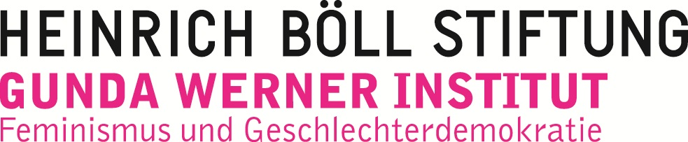

Impressum
Tina Reis
c/o Naturfreundejugend Berlin
Weichselstraße 13
12045 Berlin
feministclickback {a} mail36.net
V.i.S.d.P. Tina Reis
Adresse siehe oben
Vielen Dank an:
re:ny (Layout)
Laura Pierson Wadden (Übersetzung)
Sonja Folsche, Charlie Kaufhold and Jan Tölva (Lektorat)
Mit freundlicher Unterstützung des Gunda-Werner-Institutes für Feminismus und Geschlechterdemokratie in der Heinrich-Böll-Stiftung
This work by feministclickback.org is licensed under a Creative Commons Attribution-NonCommercial-ShareAlike 4.0 International License.